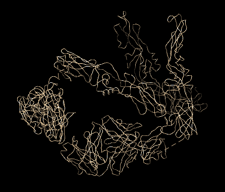
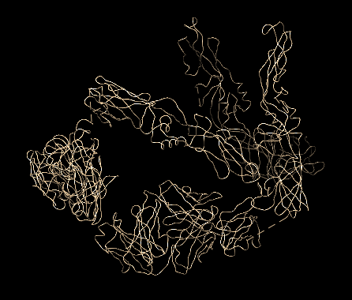
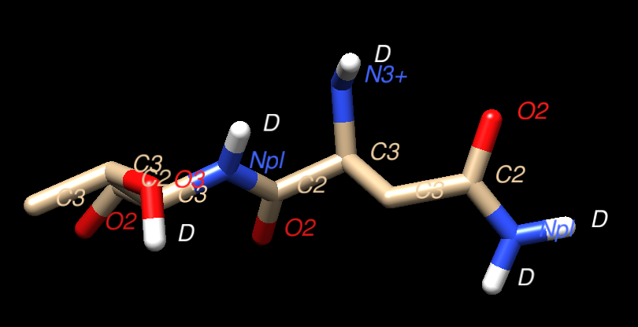
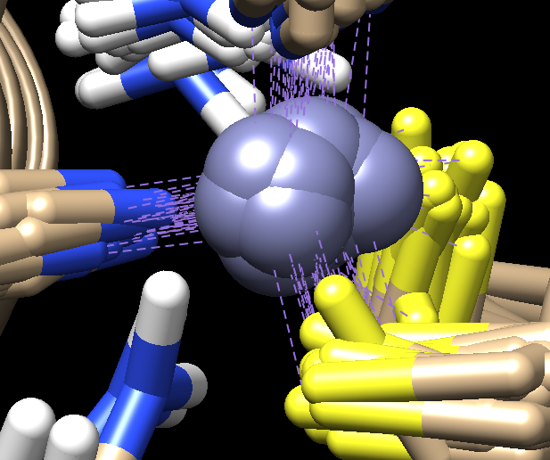

Special Structures¶
This is a photo log of special residues found from the PDB101 selection of atoms.
For now this is a list of special PDB files that were discovered while testing the parser.
To document these unusual PDB files - screen captures will be used
when interesting from the Chimera modeling system and the
unreleased Molbrowser project. The parser test PDB files
were the same as those featured in the 20 years of the PDB-101 Molecule of the Month
(MotM) feature of the rcsb.org.
2r6p¶
This interesting PDB was featured in the July 2008 MotM article on Dengue Virus.
The 2r6p PDB file contains only alpha carbon atoms in the ATOM list.
Normally the parser searches for guide atoms
to build the backbone ribbon information.
There are no other atoms in this file so this is impossible.
There are also no HETATM, CONECT, HELIX or SHEET records.
The current Molbrowser provides just a space filling view
and Chimera defaults to just the CA chain.
 

2zoi¶
This PDB structure is unusual, in that it contains Deuterium atoms. It was featured in the March 2017 PDB101 article on Photoactive Yellow Protein, specifically in the section that discusses "Looking at the Hydrogens".
The clever part of this PDB is the use of heavier Deuterium atoms instead of Hydrogen atoms - and then imaging. As noted in the PDB101 entry:
However, in most cases, X-ray crystallography doesn't allow us to observe
the hydrogens directly. Neutrons, on the other hand, are diffracted by the
nucleus of atoms, providing information on the location of hydrogen atoms.
The PYP neutron diffraction structure (PDB entry 2zoi) revealed a very
unusual arrangement, with a hydrogen atom shared between the chromophore
and a glutamate.
Here is a Chimera based snapshot showing the "D" atoms in positions where normally
the hydrogen atoms occupy.

1znf¶
This is a fine example of a PDB file that contains numerous MODEL entries. The PDB entry was discussed in the Molecule Of The Month on Zinc Fingers.
This particular PDB entry has 37 models. It appears that the general structure
of PDB files containing models is that the ATOM list is repeated for each
model with presumably the same series of residues. At the end of the last
model a common set of CONECT records appear. That is the case
for this 1ZNF model where the CONECT records define the
bonds to the Zinc atom in each model. This can be seen in the
screen cap from the Chimera representation below.
The Kotmol PDB parser currently only captures the first MODEL in a PDB file.
If there is demand for more flexibilty to optionally capture
all models, then this could be added in the future. This quote from the
Leibniz-Forschungsinstitut für Molekulare Pharmakologie
suggests that NMR techniques have a growing partnership with Cryo-EM
techniques for studying difficult structures such as membrane proteins:
Cryo-electron microscopy (cryo-EM) data define the overall envelope of the
assembly and rigid-body orientation of the subunits while solid-state NMR
chemical shifts and distance restraints define the local secondary structure,
protein fold and inter-subunit interactions.
